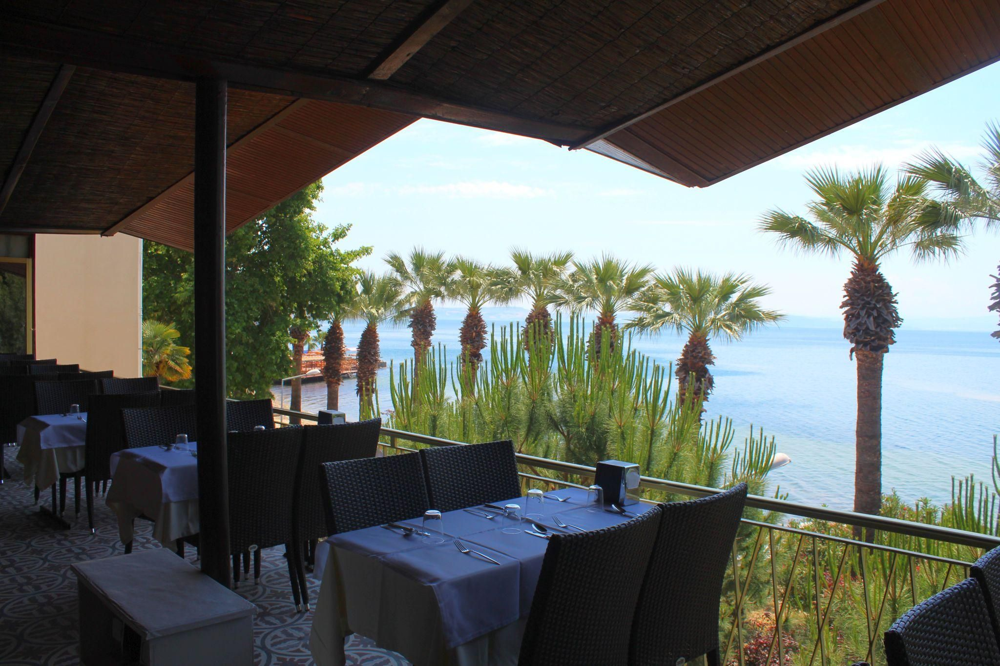
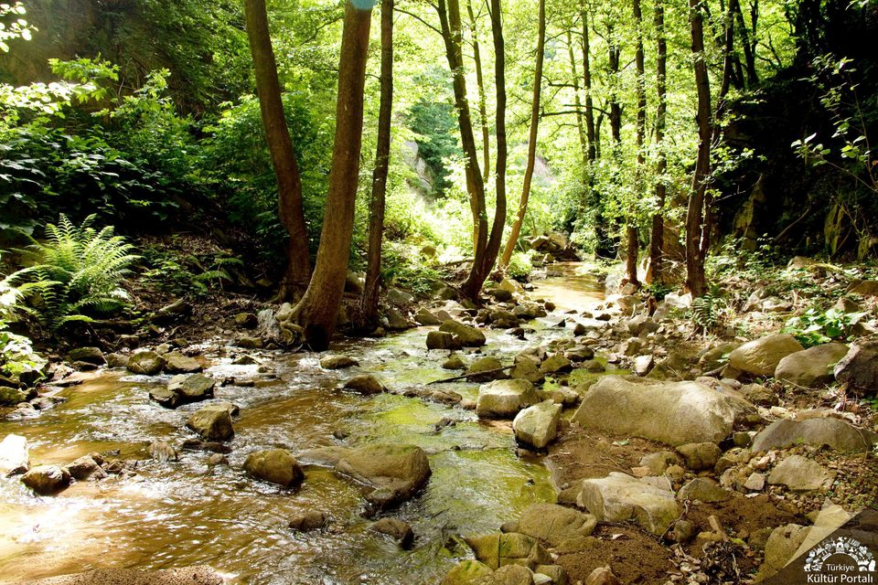
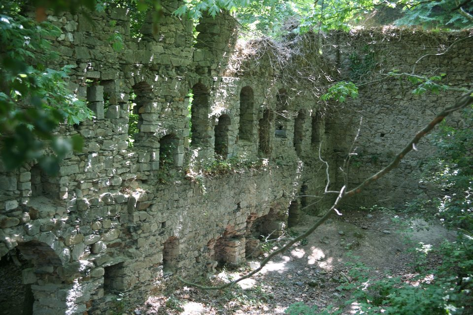

Sahil
Erdek Sahili
Erdek’in kumsalları ve deniz manzarasıyla güne bir yürüyüş molası ekleyin. Körfezin kıyısında, acele etmeden vakit geçirin.
Haritada gör
ERDEK, BALIKESİR
Erdek sahilinde bir aile oteli. Deniz manzaralı odalar, sahil yaşamı ve size kalan zaman.
ERDEK’TE DENİZE SIFIR GÜLPLAJ HOTEL
Gülplaj Hotel, Erdek sahilinde denize sıfır konumdaki bir aile işletmesi. Deniz manzaralı odalarımız, avlumuz ve restoranımızla konuklarımızı Marmara’nın kıyısında ağırlıyoruz.
Sabah sahilde bir yürüyüş, gün içinde Kapıdağ’da bir keşif, dönüşte denize bakan bir masa. Tatilinizi kendi ritminizde yaşayın.
Otel olanaklarını inceleyin
KONAKLAMA

Pencerenizin ardında Marmara, gününüzde tatilin hafifliği. Erdek’te denizin yakınında dinlenmek için bir yeriniz var.
GÜLPLAJ’I KEŞFEDİN
34 otel fotoğrafı · tam boy görüntülemek için seçin
DENİZ & LEZZET
Plajda kendinize ayırdığınız saatler, sofrada uzayan sohbetler. Tatilin keyfi, acele etmediğiniz anlarda.
Otelimizin önündeki sahilde denizin ve güneşin tadını çıkarın.
Restoranımızda sevdiklerinizle buluşun, deniz kıyısındaki gününüze lezzetli bir mola verin.

ERDEK & KAPIDAĞ
Sahil yürüyüşünden orman manzaralarına; Gülplaj’da kalırken çevrenizi keşfetmeniz için altı durak.


Sahil
Erdek’in kumsalları ve deniz manzarasıyla güne bir yürüyüş molası ekleyin. Körfezin kıyısında, acele etmeden vakit geçirin.
Haritada görDoğa
Ormanlar, zeytinlikler ve kıyı yerleşimleri arasında Kapıdağ’ın farklı yüzlerini keşfedin. Denizle yeşilin buluştuğu manzaraları rotanıza ekleyin.
Haritada görKültür
Yukarıyapıcı ile Ballıpınar arasında, ağaçların çevrelediği manastır kalıntıları Kapıdağ’ın geçmişinden izler taşıyor.
Gitmeden önce güncel yol ve erişim durumunu kontrol edin.
Haritada görKıyı
Kapıdağ’ın batı kıyısındaki Ocaklar’da ince kumlu sahili ve deniz manzarasını keşfedin. Erdek çevresinde farklı bir kıyı durağı.
Haritada görŞehir & sahil
Erdek’in liman çevresini sahil yürüyüşünüze ekleyin. Körfez kıyısında kısa bir mola verip ilçe merkezini keşfedin.
Haritada görDoğa
Erdek Kirazlı Yayla’nın ağaçlarla çevrili dere manzarası, Kapıdağ’ın yeşil yüzünü keşfetmek için bir seçenek.
Gitmeden önce güzergâhın yol ve erişim durumunu kontrol edin.
Haritada görGünübirlik planınızı oluştururken güzergâhı ve mevsim koşullarını kontrol edin.
Resmî Erdek rehberiOTEL OLANAKLARI
Kahvaltı ve yemek hizmetleri konaklama paketine göre değişir. Ek hizmetlerin ücretlerini ve özel ihtiyaçlarınıza uygunluğu rezervasyon sırasında teyit edebilirsiniz.
YOLUNUZ ERDEK’E DÜŞSÜN
Marmara’nın kıyısında, Erdek sahilinde. Denizle buluşmak ve sahil boyunca yürümek için güzel bir başlangıç.
Sahil Mahallesi, Şehit Mehmet Sokak
10500 Erdek, Balıkesir
KONAKLAMADAN ÖNCE
Odaya giriş 14.00’ten itibaren, odadan çıkış en geç 11.00’dir. Erken giriş ve geç çıkış taleplerini müsaitlik için otelle görüşebilirsiniz.
Kahvaltı ve yemek hizmetleri seçilen konaklama paketine göre değişir. Rezervasyon sırasında paket kapsamını ve toplam tutarı otelden teyit edin.
Rezervasyon bölümündeki otel numaralarından bizi arayın. Tarihlerinizi ve misafir sayınızı paylaşarak müsaitlik, fiyat ve koşulları öğrenebilir, rezervasyonunuzu otelden teyit edebilirsiniz.
Galeride odalar ve balkonlar, banyolar, ortak alanlar ve dış cephe ayrı gruplardadır. Fotoğrafa dokunarak özgün çözünürlükte görüntüleyebilirsiniz.
0–6 yaş ücretsizdir (6 yaş dahil). 7–12 yaş için yetişkin ücretinin %50’si uygulanır. 13 yaş ve üzeri yetişkin kategorisindedir. Ek yatak veya bebek yatağı için otel ekibine danışın.
Giriş ve çıkış tarihlerinizi ve kaç kişi konaklayacağınızı telefonla paylaşın. Otel ekibi size uygun oda seçeneklerini ve güncel fiyatı iletir.
İşlemden önce rezervasyon onayınızdaki iptal ve değişiklik koşullarını okuyun. Yardım için rezervasyon numaranız ve konaklama tarihlerinizle otele ulaşın. İptal, değişiklik ve varsa iade koşulları seçtiğiniz rezervasyon planına bağlıdır.
MİSAFİRLERİMİZDEN
Gülplaj’da kalan misafirlerimizin Google yorumlarından seçtiğimiz kısa alıntılar.
Google4,1/5İçten bir teşekkür
“Herşey için tekrar ne kadar teşekkür etsek az kalır.”
Ev sıcaklığında
“Hiç bir yerde böyle samimi aile evinde gibi hissettiren, lezzetli yemekleri olan…”
Seçilmiş kısa alıntılardır. Tüm yorumları ve güncel puanı Google’da inceleyebilirsiniz.
Google’daki tüm yorumlar ↗Deneyiminizi paylaşarak tatilini planlayan misafirlere yardımcı olabilirsiniz.
BİR SONRAKİ MOLANIZ
Konaklama planınızı paylaşmak, fiyat ve müsaitlik öğrenmek için bize ulaşın.
Konaklama tarihlerinizi ve misafir sayınızı paylaşın. Müsait odaları, fiyatı ve rezervasyon koşullarını birlikte netleştirelim.
Rezervasyon koşullarını inceleyinKONAKLAMADAN ÖNCE
Oda, konum ve konaklama paketi seçimini kolaylaştıran rehberlerimizi inceleyin.